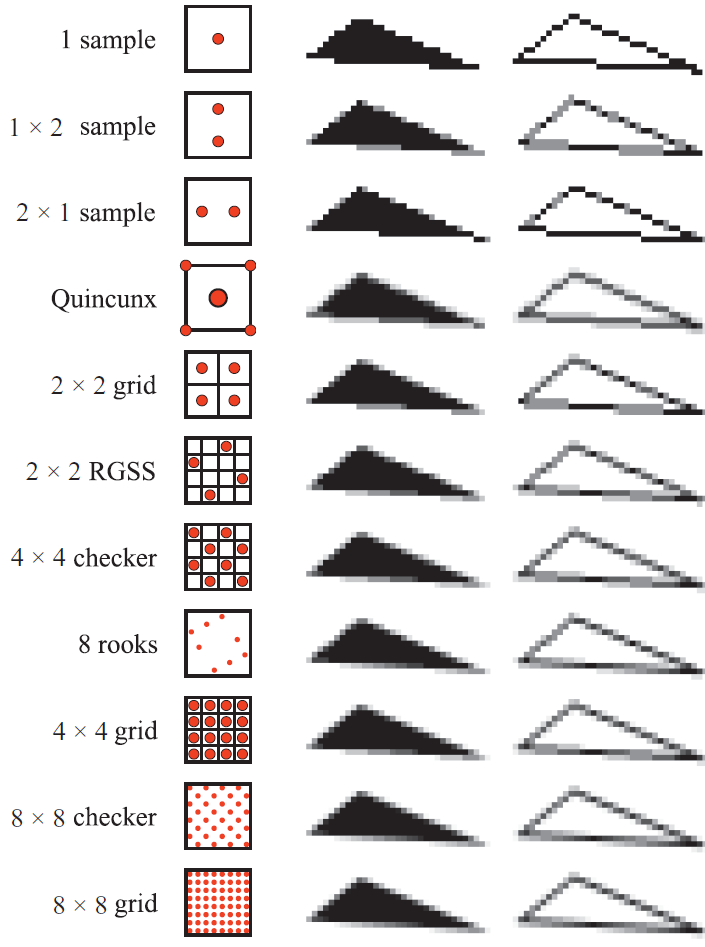
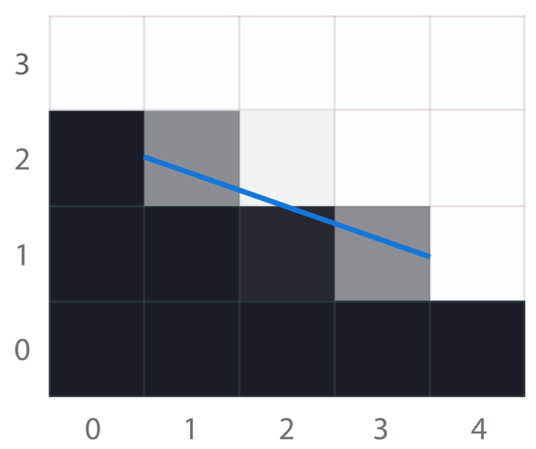
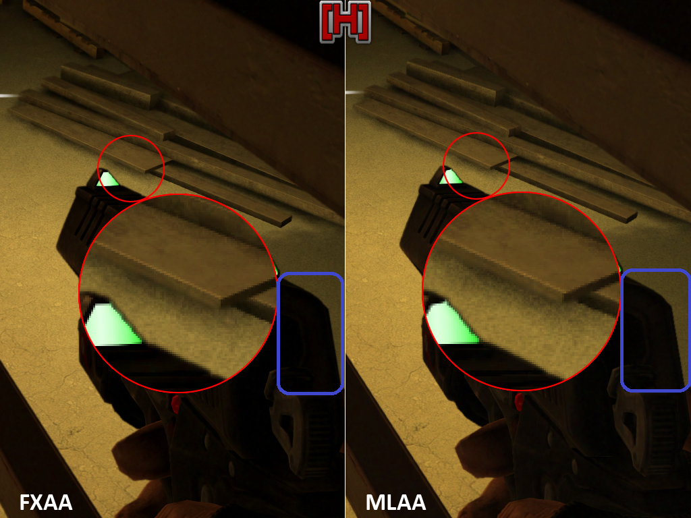
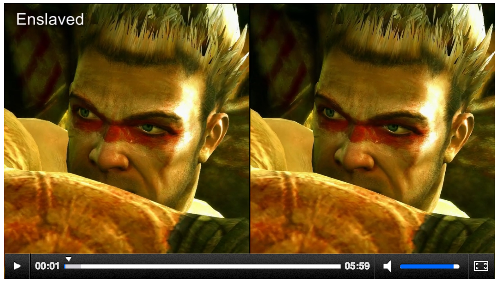

cgTalk #05
Anti-Aliasing
Sebastian Schaefer


A note on navigation
- space for the next slide
- backspace for the previous slide
- left/right to jump to the next chapter
- up/down to navigate in current chapter
Why?
2 Slides from Siggraph 2012's Advances in Real-Time Rendering in Games TalkRock-Solid Shading: Image Stability without Sacrificing Detail
by Stephen Hill & Dan Baker...
Aliasing
www.kotaku.com.auAliasing
(nvidia driver tool on windows)
Aliasing

Processing Mirror's Edge on PS3
Agenda
- What's Aliasing?
- AA: Brute-Force
- AA: Rendering smart
- AA: PostProcess
- AA: Animation aware
- Conclusions
What's Aliasing?
Signals & sampling...Signals
To understand aliasing we need to understand images
- an image is a signal
- a digital/raster image is a sampled signal
- to render is to sample a signal
- to display a raster image is to reconstruct
Alias
An alias is the effect when two different signals become indistinguishable. The effect can be seen with a simple sine-wave:
The original signal is sampled with a too low frequency . The samplepoints match a signal with a much lower frequency.
This is also serves as an explanation for moiré-patterns. It's just a bit more complex for color images.
Moiré

Source: giphy.com/ |
Source: giphy.com/ |
Nyquist
Ultimately the aliasing is created by undersampling the signal.
Sampling above the Nyquist-frequency $n$ allows to faithfully reproduce a signal with frequency $f$: $$n_{\text{nyquist}} \geq 2 \cdot f.$$
Example:
A CD has 44100 samples/sec, the highest frequency is $n = 22050$hz. In such a situation the signal should be filtered with low-pass filter with $22050$hz.
Note: a visual low-pass filter is a gaussian blur. Just sayin'.
Sampling
For each pixel there is a decision if an object is seen below it.
- Evaluation in middle of pixel
- Ideally: wider impulse that covers the inside of the pixel
- Reality: infitely small needle impulse
Source: ocw.mit.edu/...
Reconstruction
A raster image can be displayed at any resolution:
- this is ultimately sampling of the image
- new aliasing issues can be created
  |
|
| adobe.com | gpu gems |
Examples 1
Lines
Examples 2
Polygons
|
Scintilation |
Complex object |
| gdv.informatik.uni-frankfurt.de | realtimerendering.com |
Anti-Aliasing
Brute-Force
FSAA/SSAA
The straight-forward idea is to invoke brute-force methods:
- double the render-resolution: close to nyquist!
Price: ~4-times the work!*
In FullScreenAntiAliasing or SuperSamplingAntiAliasing the following approach is taken:
- The vertex-stage is unchanged
- Increase the Resolution/Renderbuffer by factor $n \in \mathbf{N}$
$\rightarrow$ a pixel is divided into $n \times n$ subpixel. - All fragment related operations require $n^2$-times work
- Use an appropriate (sampling) filter to down-sample the image to target resolution
*Price: bandwidth + shading + down-sampling.
FSAA filter kernels
source
MSAA
MultiSampleAntiAliasimg is a simplified, less demanding variant of FSAA:
- For each rendered pixel a participating polygon is only shaded once, regardless of subpixels it occupies
- The coverage of an object and subpixel determine the final color blend. As a result only the edges are antialiased.
MSAA has the same choice of FSAA filter kernels that determine the downsampling. Vulkan lets you define custom filter patterns!.
MSAA in action

msdn.microsoft.com
AlphaToCoverage
Alpha to coverage is an extension to MSAA that allows to cheaply mix alpha-blending and MSAA. The alpha value is factored in the MSAA downsampling and works well for 1-bit transparency cutouts.
Effectively transparent edges are treated as geometry edges.
Anti-Aliasing
Render-specific
General Notes
There are ways to avoid aliasing. This is of course preferred to applying a fix later.
Generally the idea is to avoid high-frequency signals to be rendered. This can be acchieved by:
- not drawing small items
- having a textures with a proper fit for the designated output resolution
- Not drawing something that has hard edges
- ...
Line drawing
Traditional line drawing is done using some variant of Bresenham's algorithm:
- walk along a line from start ro endpixel
- use a decision term to pick which pixel to fill
By interpreting the decision term not as a bool decider but an alpha-factor we can antialias the line (proposed by Xiaolin Wu).

|

|

|
PhoneWireAA
Another common problem is that modeled structures can become too small when viewed for afar. One goto example is phonewires, that are endangered by scintilation.
Emil Persson propsed to handle these objects by extruding them in the vertex shader. In that stage they can be expanded to a minimal safe pixel width. This works because they are round and have the same width from every view-angle.
Derivatives
Shader-Deratives can be used to antialias procedural patterns created in the fragment. The frequency of the pattern is evaluated and compared to the screen-based nyquist frequency.
- checker pattern on a ball
- outline of line & circle
|
Source: Orange Book |
Source: www.numb3r23.net |
Dedicated shading functions
Some shading functions can introduce aliasing by introducing a high-frequency shading. This can be generated by e.g.
- rapidly changing normals from a badly sampled normal map or
- a very high shininess of the blinn illumination that results in sparkle.
To compensate the effect there are dedicated techniques (e.g. LEAN mapping) that provide a proper sampling of the normals.
Marc Olano, Dan Baker
Anti-Aliasing
PostProcess
General Notes
PostProcessing algorithms work after the fact:
their input is an already rendered image.
Benefits:
- easy to integrate - just render to a rendertarget and display using the AA-shader
- (usually) cheaper than MSAA (bandwidth + shaded fragments!)
- visually good results
- works better than a blur (low-pass!);-)
Downside:
- Yes, it's a very specialized edge-detection = pseudo anti-aliasing
- Does not have access to geometrical information
MLAA & SMAA
Morpho-Logical-Anti-Aliasing and the follow-up work Subpixel-Morphological-Anti-Aliasing are morphological filter.
Both detect known alias-causing structures and apply a proper filter.
|  |
Source: iryoku.com
Both methods are known to create very good results, but also to be demanding.
MLAA & SMAA
Here's an overview oth the shapes MLAA can detect:
source
FXAA
Fast-approXimate-Anti-Aliasing is also a morphological antialiasing method, but not as demanding as MLAA and SMAA.
It has been described as an effective heuristic blur where a global quality setting sets the level the heuristic is evaluated.
MLAA & FXAA
source
MLAA & FXAA
source
MLAA & FXAA
source
Anti-Aliasing
Animation aware
TXAA
Temporal-Anti-Aliasing (I'm lost on the X...) combines MSAA with a temporal filter that operates on multiple frames. It thus tackles aliasing from animations that is created when different anti-aliasing patterns are visible throughout a frame-sequence.
source
TXAA is a HW-dependant and requires a NVidia Kepler (GTX-600).
Recap & Conclusion
Recap: Abbreviations...
- Full scene, Brute-Force:
FSAA/SSAA $\rightarrow$ full scene
MSAA $\rightarrow$ full scene, limited fragment operations
- Final image, PostProcess
MLAA/SMAA $\rightarrow$ morphological AA
FXAA $\rightarrow$ heuristic blur, lighter
- For animations
TXAA $\rightarrow$ animation, NVidia only!
Conclusions
Admit you have a problem!
Admit you have a problem!
- Humans have evolved to recognize aliasing
- Aliasing is a visual detractor and therefore irritating at times
- Good choices regarding the to-be-rendered data and how to render it can help to tame the aliasing
- Even the post-processor solutions can help!
- Ultimately it's a performance trade-off (do we have the msecs?)
Examples
FXAA vs. MLAA in Enslaved
Examples
FXAA vs. SMAA